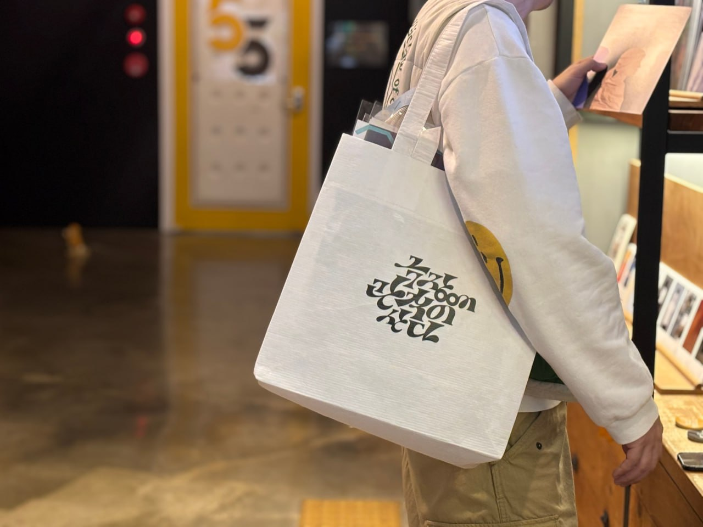

오오극장오오극장 소개

-
지역 최초의 독립영화전용관!
오오극장은 대구최초의 독립영화전용관이며 서울을 제외한 지역에서 최초로 설립되는 독립영화전용관입니다.
-
함께 만드는 공공의 영화관!
오오극장은 독립영화에 갈증을 느끼는 사람들의 모금을 통해 설립되었습니다. 영리추구보다는 영화문화의 다양성과 그 저변을 확대해 나가는 공공의 영화관으로 자리매김 할 것입니다.
-
로컬시네마!
오오극장은 극장상영의 기회가 상대적으로 적은 지역의 독립영화, 단편영화, 다큐멘터리 등을 가장 먼저, 집중적으로 선보이는 지역영화 중심의 영화관입니다.
-
커뮤니티시네마! 함께 만드는 상영시간표!
오오극장은 ‘커뮤니티시네마’라는 기치를 내걸고 관객들 그리고 다양한 공동체들과 함께 상영 프로그램을 만들어가는 ‘영화공동체’를 지향합니다. 또한 감독과의 대화, 영화관련 세미나 등을 통해 관객들과 꾸준히 소통하고자 합니다.
-
시민제작자들과 함께하는 영화관!
오오극장은 청소년, 주부, 노인, 장애인, 이주민 등 다양한 계층의 시민들이 만든 영상물과 영화들을 지속적으로 상영하는 문턱 낮은 영화관입니다.
-
커뮤니티카페 삼삼다방
오오극장은 커뮤니티카페 삼삼다방을 함께 운영합니다. 이곳은 영화인들과 관객들이 서로 교류하는 소통의 공간이자, 세미나, 시나리오 공유모임, 자유토론 등이 가능한 교육의 장이기도 합니다.
-
취향의 공동체! 다양한 취향을 담는 상상초월 기획전들!
오오극장은 영화의 장르만큼이나 다양한 취향이 존중받고 공존하는 영화관입니다. 다큐멘터리, 애니메이션, 실험영화 등을 소개하는 프로그램을 통해 관객들의 다양한 취향을 담아내고자 합니다.
-
독립, 자립, 인디예술과 어울리는 영화관
오오극장은 영화예술을 넘어 지역의 독립, 자립, 인디예술 공연과 전시가 펼쳐지는 지역예술의 대안공간이며, 다양한 저변문화의 정보를 얻고 예술가를 만날 수 있는 연결고리입니다.
-
무한한 가능성의 자유로운 영화관!
오오극장은 예술의 본질인 표현의 자유가 최우선으로 존중받는 영화관입니다. 영화의 무한한 상상력과 가능성을 가로막는 그 무엇 혹은 그 누구로부터도 자유로운 영화관입니다.
-
그리고 어떻게 성장할지 우리도 알 수 없는 영화관
퀴퀴한 시네마테크, 대사관 강당, 3류 극장 구석의 곰팡이와 동무하며 무럭무럭 자라난 독립영화는 한국영화의 중요한 밑거름이 되었습니다. 오오극장은 대구시 중구 수동에서 자그마하게 시작하지만 대구를 넘어 한국 영화문화의 발전에 있어 소중한 밑거름이 되도록 노력할 것입니다.